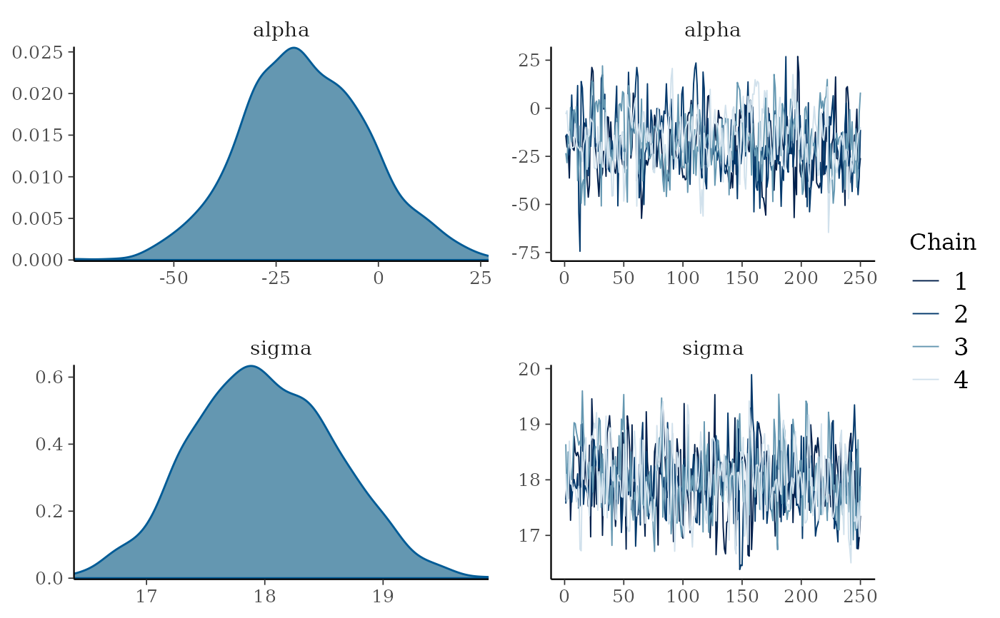
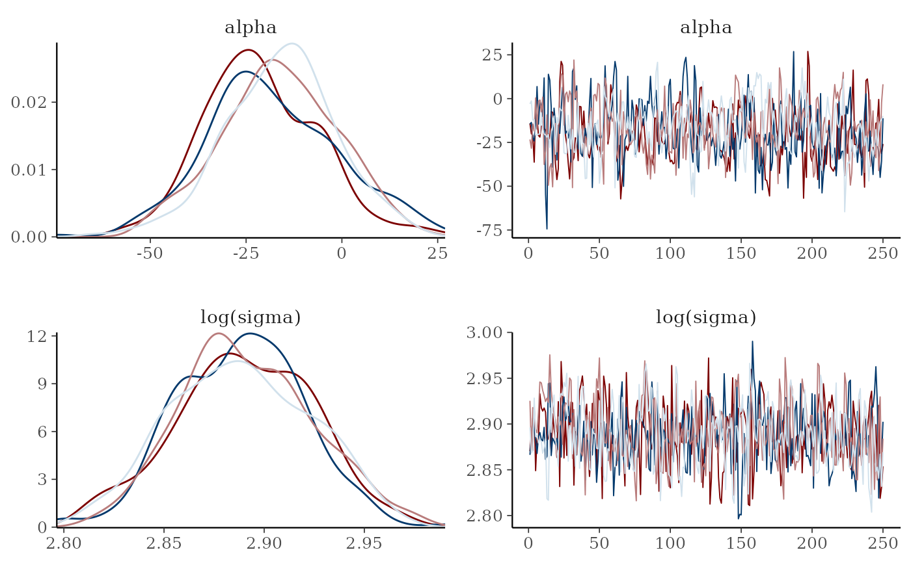

Combination plots
Usage
mcmc_combo(x, combo = c("dens", "trace"), ..., widths = NULL, gg_theme = NULL)Arguments
- x
An object containing MCMC draws:
A 3-D array, matrix, list of matrices, or data frame. The MCMC-overview page provides details on how to specify each these.
A
drawsobject from the posterior package (e.g.,draws_array,draws_rvars, etc.).An object with an
as.array()method that returns the same kind of 3-D array described on the MCMC-overview page.
- combo
A character vector with at least two elements. Each element of
combocorresponds to a column in the resulting graphic and should be the name of one of the available MCMC functions (omitting themcmc_prefix).- ...
Arguments passed to the plotting functions named in
combo.- widths
A numeric vector the same length as
combospecifying relative column widths. For example, if the plot has two columns, thenwidths = c(2, 1)will allocate more space for the first column by a factor of 2 (as wouldwidths = c(.3, .15), etc.). The default,NULL, allocates the same horizontal space for each column.- gg_theme
Unlike most of the other bayesplot functions,
mcmc_comboreturns a gtable object rather than a ggplot object, and so theme objects can't be added directly to the returned plot object. Thegg_themeargument helps get around this problem by accepting a ggplot2 theme object that is added to each of the plots before combining them into the gtable object that is returned. This can be a theme object created by a call toggplot2::theme()or one of the bayesplot convenience functions, e.g.legend_none()(see the Examples section, below).
Value
A gtable object (the result of calling
gridExtra::arrangeGrob()) with length(combo) columns and
a row for each parameter.
Examples
# some parameter draws to use for demonstration
x <- example_mcmc_draws()
dim(x)
#> [1] 250 4 4
dimnames(x)
#> $Iteration
#> NULL
#>
#> $Chain
#> [1] "chain:1" "chain:2" "chain:3" "chain:4"
#>
#> $Parameter
#> [1] "alpha" "sigma" "beta[1]" "beta[2]"
#>
mcmc_combo(x, pars = c("alpha", "sigma"))

mcmc_combo(x, pars = c("alpha", "sigma"), widths = c(1, 2))
# \donttest{
# change second plot, show log(sigma) instead of sigma,
# and remove the legends
color_scheme_set("mix-blue-red")
mcmc_combo(
x,
combo = c("dens_overlay", "trace"),
pars = c("alpha", "sigma"),
transformations = list(sigma = "log"),
gg_theme = legend_none()
)

# same thing but this time also change the entire ggplot theme
mcmc_combo(
x,
combo = c("dens_overlay", "trace"),
pars = c("alpha", "sigma"),
transformations = list(sigma = "log"),
gg_theme = ggplot2::theme_gray() + legend_none()
)
# }